For the realization of my drone, I decided to change frame size than those of the first prototype of AAVOID made with Daniele: the idea is to use a frame of 33 cm in order to make it easier to use composites materials and the realization of a protection structure.
In rhino've redesigned the layout of the frame, keeping unchanged the holes for the engines and feet.
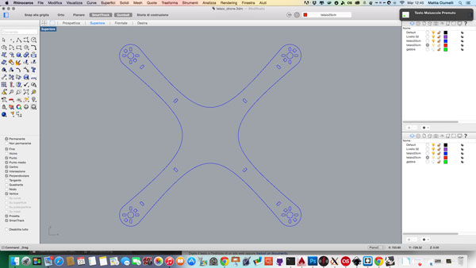
Ideally this is what I want to achieve:
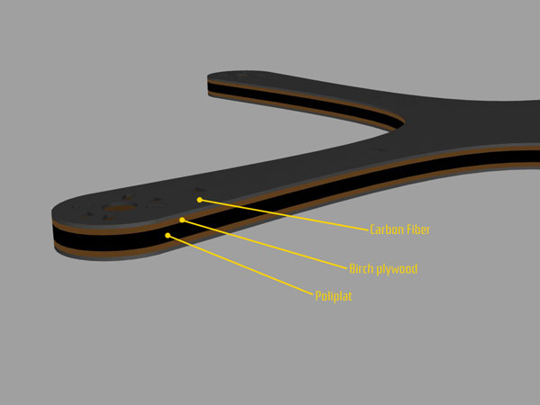
The idea is to use two layers of birch plywood 1,5mm interspersed with a layer of poliplat 5 mm, put them together using epoxy resin, and subsequently coat the structure using carbon fiber.I would get a frame that is as resistant as possible, but at the same time lightweight.
To do this, I exported the layout created in Rhino and I lasered on 2 materials to be used
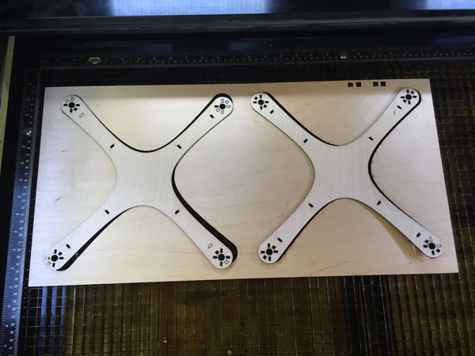
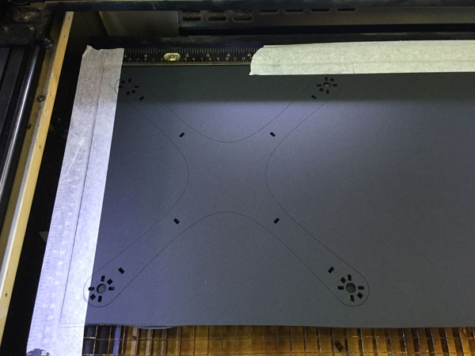
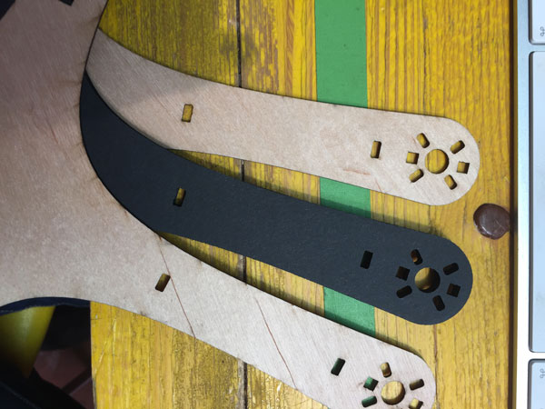
Once prepared layers, before applying the resin, I have prepared a structure that would allow me to hold on the layers during laying: on a wood panel I applied 4 pins at the holes of the motors on the chassis, so as to then exploit them for laying the various layers.
Subsequently I have held the support structure with the plastic to prevent it incollasse to the frame.
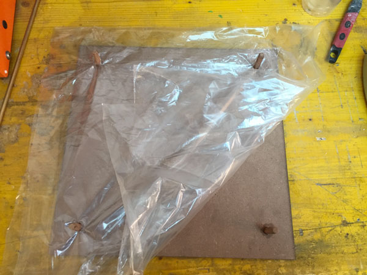
After that I placed the first layer to check that the pins have been consistent with the holes
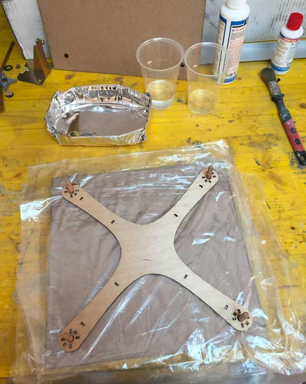
Once it established that the holes were right I prepared the epoxy resin, mixing hardener and the resin with the proportion of 1: 2 by weight.
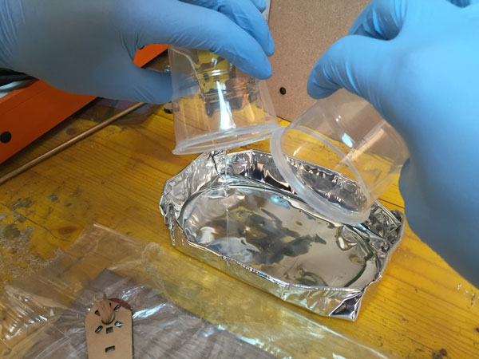
Once finished mixing the two components, I started to apply the resin in each layer
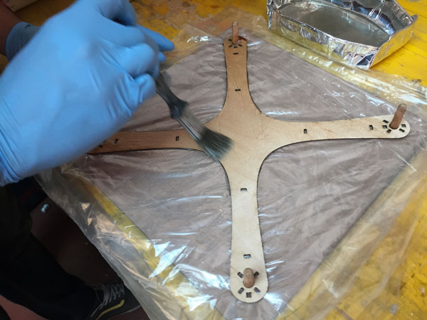
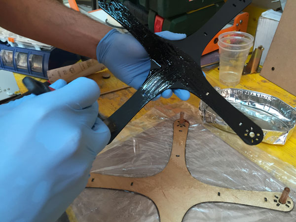
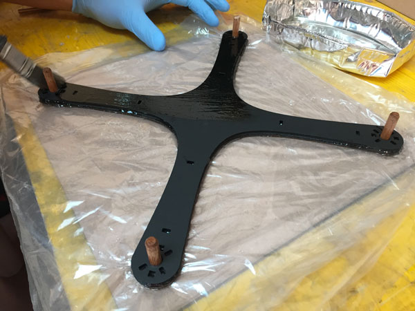
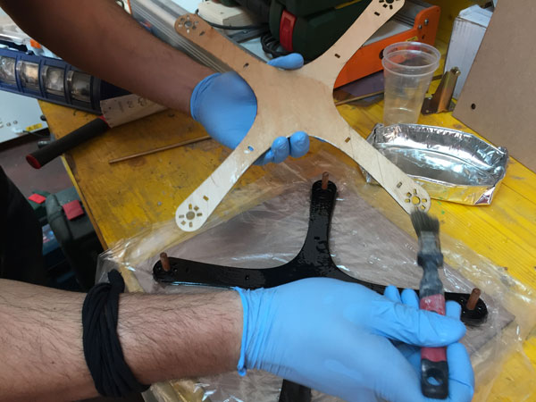
When finished applying the layers, I covered the frame with a layer of plastic, I closed it with another panel of wood and pressed using clamps.
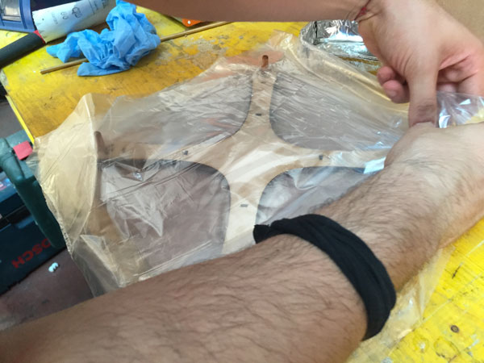
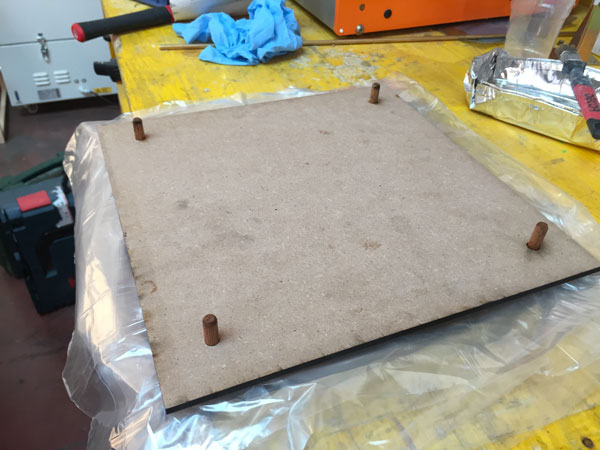
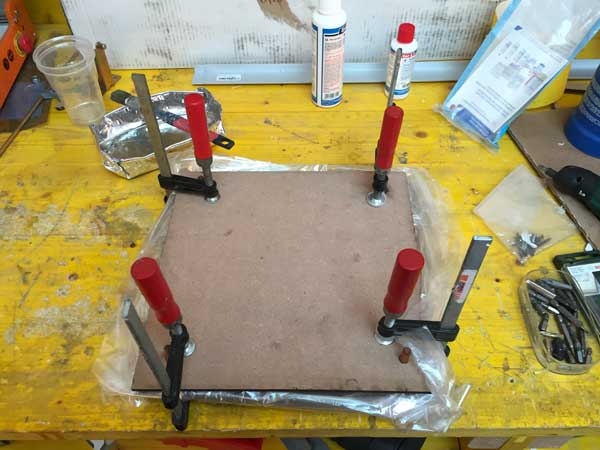
After 24 hours, I opened the mold to check the result
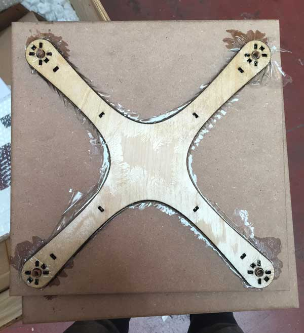
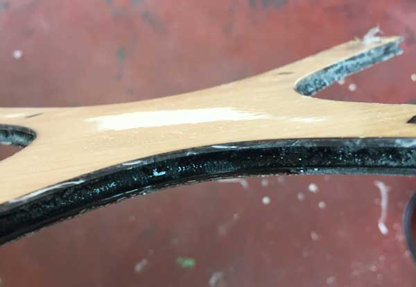
and once I checked I started to apply, always using the epoxy resin, the strips of carbon fiber
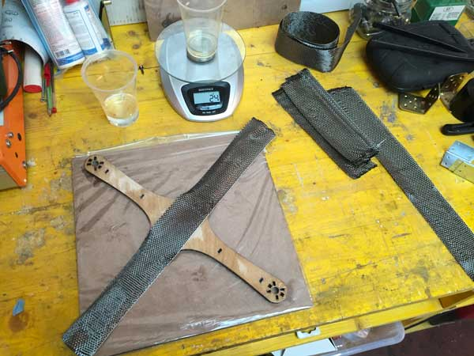
After another 24 hours, I again open the mold and I started to remove the carbon fiber in excess
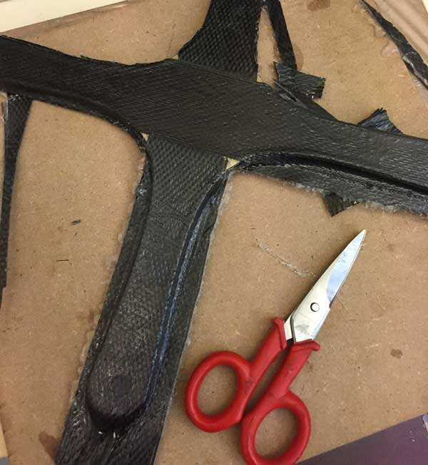
Then, using a mask of the shape of the original frame and a dremel, I recovered all the holes that had been lost with the application of carbon fiber.
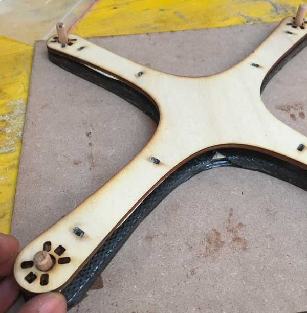
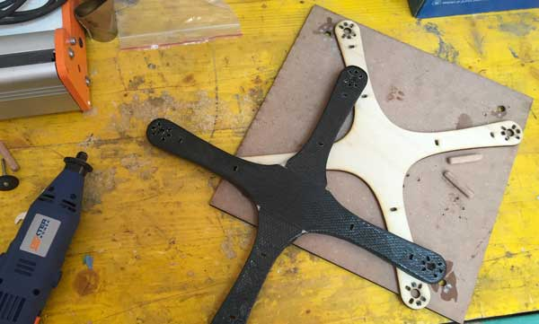
And this is the final result!
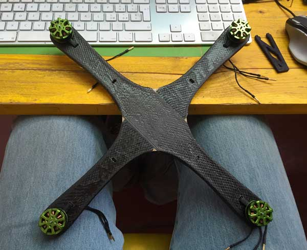
As regards the parts of substrate to be printed in 3d, I only modified the parts of the first prototype made with Daniele.
First of all, I changed my feet, reaching part that fits into the frame, so as to make it more stable.
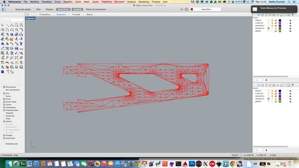
As for the battery compartment instead, I have modified the base of the structure, making internal to the shape of the central part of my frame, and I have set up the holes in the corner for lock them on the frame.
In addition to the base I modified also the part of the battery compartment, making it become a single piece so as to make it more solid and resistant.
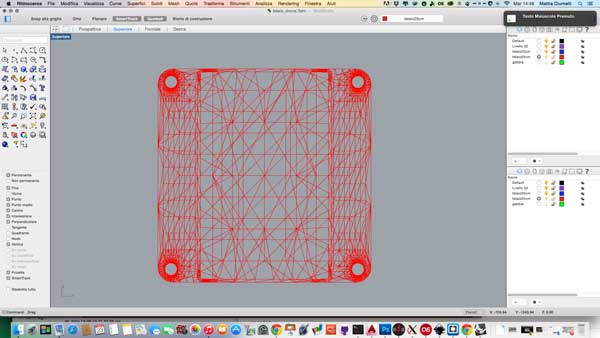
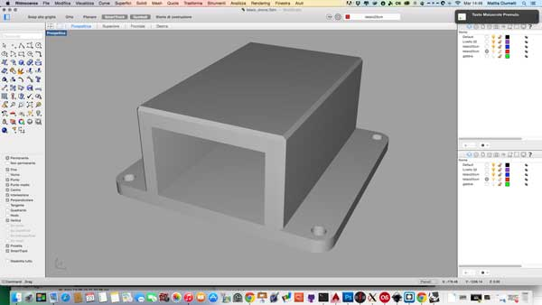
During the first test on the new frame I found a problem: the vibrations. Having a very light frame, with an inner part almost quarry, the vibrations propagate too, coming to affect the IMU and electronics, giving a reading of values totally wrong.
To try to dampen the vibration I used some rubber spacers, specifically designed for this, which I found in a hobby store.
I designed in Rhino support for engines and for the electronics, so try to isolate them from the frame, and make them less susceptible to vibration.
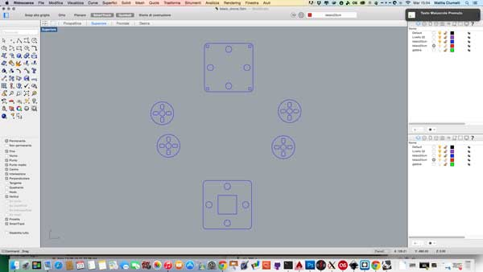
The i have laser cutted them, always using the 1,5mm birch plywood.
Firt i mounted the spacers on the support for the engines
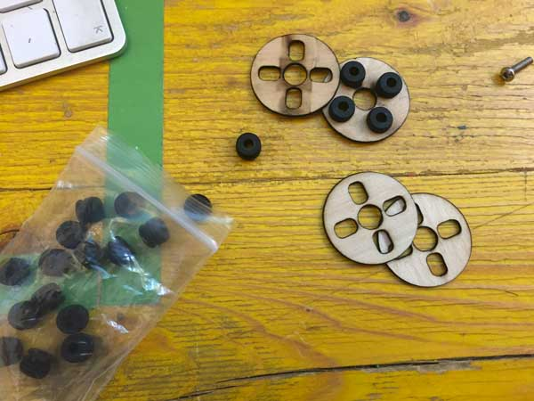
and then i place the support with the spacers below the engines
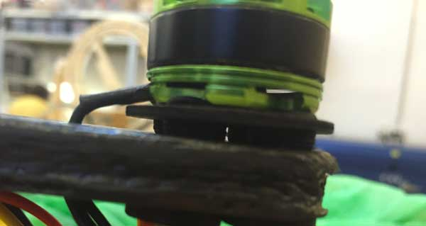
After that I applied the spacers to the support for the electronics: these spacers are much larger than those used for engines and should ensure perfect insulation of the electronic part from possible vibrations of the frame.
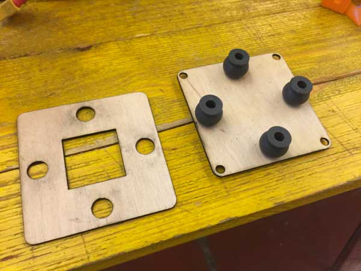
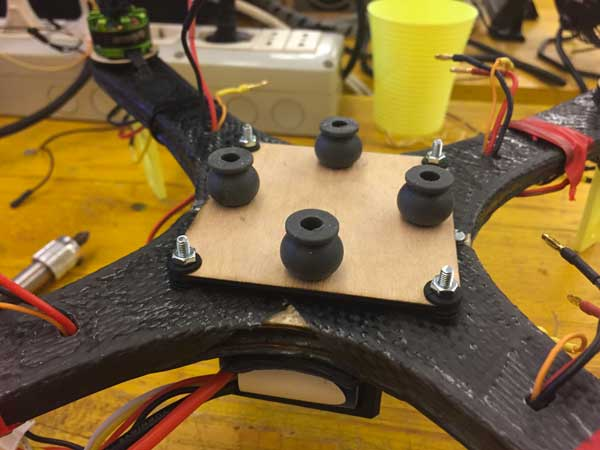
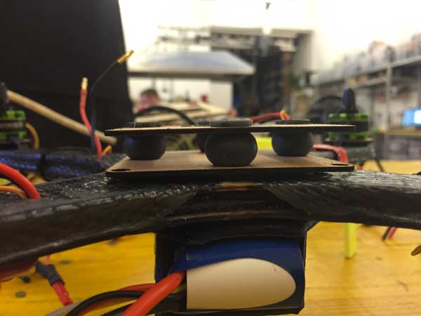
At the top, will then set the flight controller board, while the hole in the center of the support will contain the IMU.
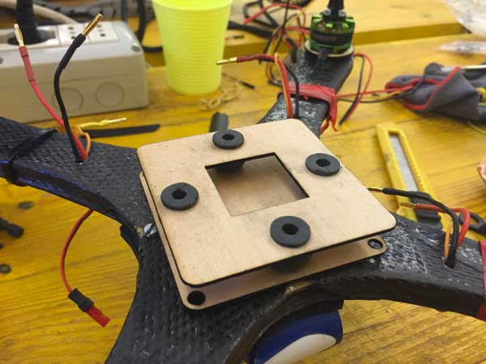